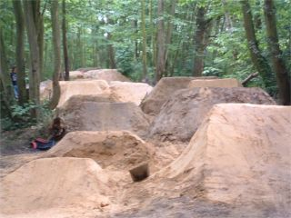
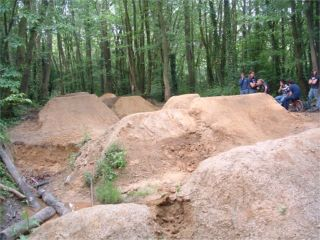
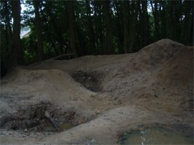
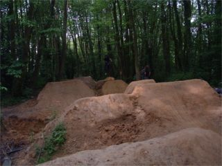
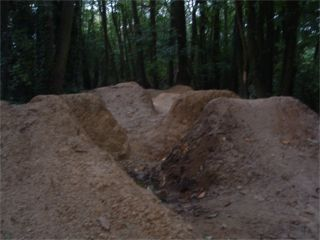
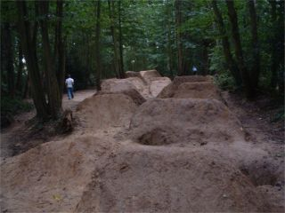
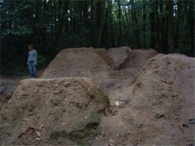
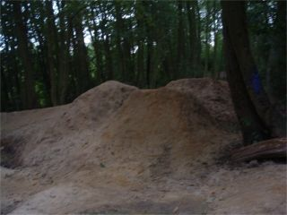
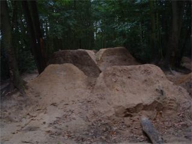
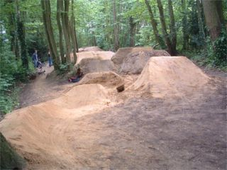

|
     |
     |
Joeys When we went to joeys in June they had just been built up and were nice. now they have been run on and walked over and rained on and they look a mess as you can see.
The picture on the left is before, the picture on the right is after for the first two.
The soil is very sandy which means that they fall apart easily. When you build them you have to hit the dirt in as you build them to make them stronger apparently. When we helped dig a little but it was just the fun shaping stuff.
This is a weird hip berm thing. The jump is a 90 degree hip almost, into a 180 berm, then over a pump bump, over a small jump which is a tabletop over the bowl for the hip before and then into a new line. Seriously wierd.
For those who don't know, Dean Hearne used to dig these trails after school with his freinds. They came down one day and they were gone, so they just started to build them again.
The council got tired of knocking the trails down all the time so eventually they let them build here, as long as it's in between certain trees.
Maybe one day I'll go here and they will actually be dry and I can ride them. |